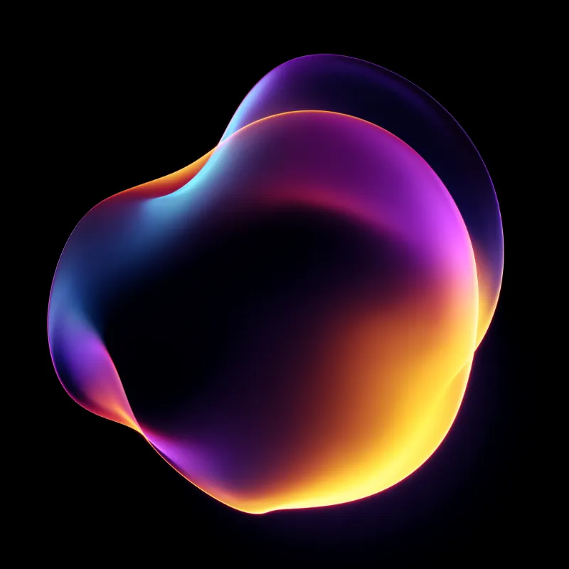

Design System Showcase
3 systems / 1 language
DESIGN SYSTEM
COMPONENTS
PATTERNS STYLES
DOCUMENTATION
A comprehensive guide to the visual language, components, and patterns of the Opris system — the glow of Luminous, the brutalist canvas of Canvas, and the precision of Finex, in one language.


+9
Maintained by the core team
48
Components
3
Source Systems

Fig. 01
Live Preview
01 / 06
Component Library
Interactive examples of every component, state, and motion rule in the system.
+100%
Coverage
Components
48
Motion Rules
12
Design Tokens
Live System
Opris / 2026
?
How do I use it?
Every section below is a copy-paste reference.